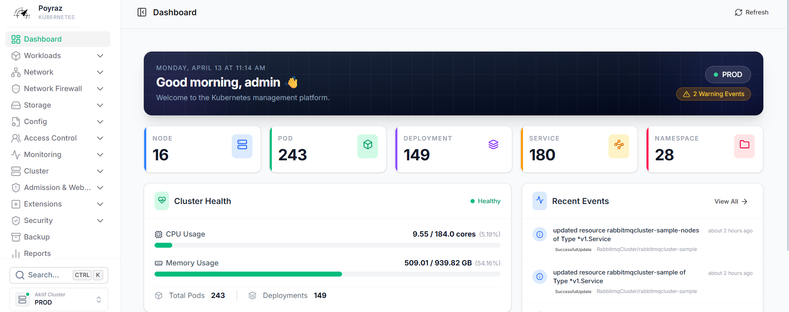

Mastering Environments
Ortamları Yönetmek
An "Environment" in Poyraz-K8s is not just a cluster; it is a meticulously managed logical boundary. The platform acts as a unified "Pane of Glass", allowing you to oversee dozens of disparate Kubernetes clusters from a single dashboard.
Poyraz-K8s platformundaki bir "Ortam (Environment)" sadece bir küme (cluster) değildir; titizlikle yönetilen mantıksal bir sınırdır. Platform, onlarca farklı Kubernetes kümesini (cluster) tek bir kontrol panelinden izlemenizi sağlayan birleşik bir "Sistem Gözlem Ekranı" olarak hareket eder.

Kubeconfig Federation
Kubeconfig Federasyonu
Environments are securely imported via base64 encoded standard Kubeconfig files. The backend encrypts these and securely invokes them asyncronously exactly when a management action is required.
Ortamlar, base64 kodlu standart Kubeconfig dosyaları aracılığıyla güvenli bir şekilde içe aktarılır. Backend bu dosyaları şifreler ve asenkron olarak sadece yönetim eylemi başlatıldığında kullanır.
Multi-Cluster Telemetry
Çoklu Küme (Multi-Cluster) Telemetrisi
The dashboard seamlessly merges pod resources, crashloop anomalies, and node capacity across ALL registered environments simultaneously.
Kontrol paneli; kayıtlı TÜM ortamlardaki pod kaynaklarını, crashloop (sürekli yeniden başlama) anomalilerini ve node kapasitelerini sorunsuz bir şekilde birleştirir.
| Environment Data Point | Ortam Veri Noktası | Functionality | İşlevsellik |
|---|---|---|---|
| Cluster UIDKüme UID | The core identifier binding Role-Based permissions (RBAC) securely to exclusively that specific environment.Rol-Tabanlı izinleri (RBAC) güvenli bir şekilde sadece o belirli ortama bağlayan temel tanımlayıcıdır. | ||
| Active AlertsAktif Uyarılar | Aggregates real-time Kubernetes Warning events (Evicted, Failed, OOMKilled) without requiring Prometheus.Prometheus gerektirmeden gerçek zamanlı Kubernetes Warning (Uyarı) olaylarını (Evicted, Failed, OOMKilled) toplar. | ||
| Topology EngineTopoloji Motoru | Isolates environment networking metrics to build cluster-specific traffic boundaries utilizing eBPF agents.eBPF ajanlarını kullanarak kümeye özgü trafik sınırları oluşturmak için ortamın kendi ağı (networking) metriklerini izole eder. |